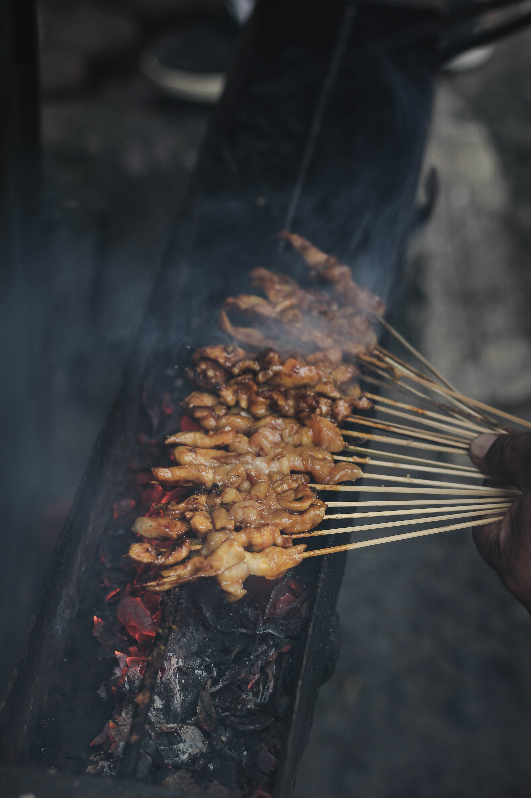

How to make Beef Satay

This beef satay recipe is the main course-size version of a fabulous Thai appetizer; strips of
beef marinated in Asian spices, skewered and grilled for a truly amazing combination of flavors.
Ingredients
- a half cup of packed brown sugar
- a quarter cup of fish sauce
- 4 clovess of garlic, crushed
- 2 tablespoons of minced onion
- 2 tablespoons of vegetable oil
- 2 tablesoons of soy sauce
- 2 tablespoons of ground coriander
- 1 tablespoon of grated fresh ginger root
- 1 tablespoon of ground cumin
- a half teaspoon of ground turmeric
- an eighth teaspoon of cayenne pepper
- 1a piece of 12-inch fresh lemon grass (white part only)
- 2 pounds beef top sirloin, trimmed
- 4 pieces of 12-inch long metal skewers
Steps
- Whisk togethe brown sugar, fish sauce, garlic, onion, oil, soy sauce, coriander, ginger, cumin, turmeric, and cayenne pepper in a mixing bowl until smooth.
- Bruise lemon grass by hittingit lightly several times with the back of a large chef's knife; mince lemongrass and add to marinade.
- Cut beef sirloin into strips about 2 1/2-inches long and 1/8 inch-thick. Stir beef into
marinade until beef is completely coated, about 1 minute. Cover the bowl with plastic
wrap and marinate in the refrigerator for 2 to 4 hours.
- Preheat an outdoor grill for high heat. Lightly oil the grate.
- Remove beef from marinade and shake off excess marinade. Thread 1/4 of the meat
onto each metal skewer. Discard remaining marinade.
- Arrange skewers on the preheated grill; cook until meat stops sticking to the grill, 1 to 2
minutes. Flip skewers and continue cooking until meat is well browned and shows grill
marks, 2 to 2 1/2 minutes. Flip skewers once more; cook until meat is still slightly pink,
about 2 minutes. Transfer skewers to a platter; let rest for 2 minutes before serving.